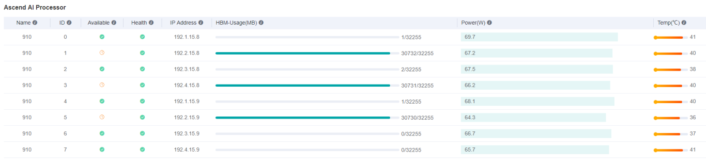
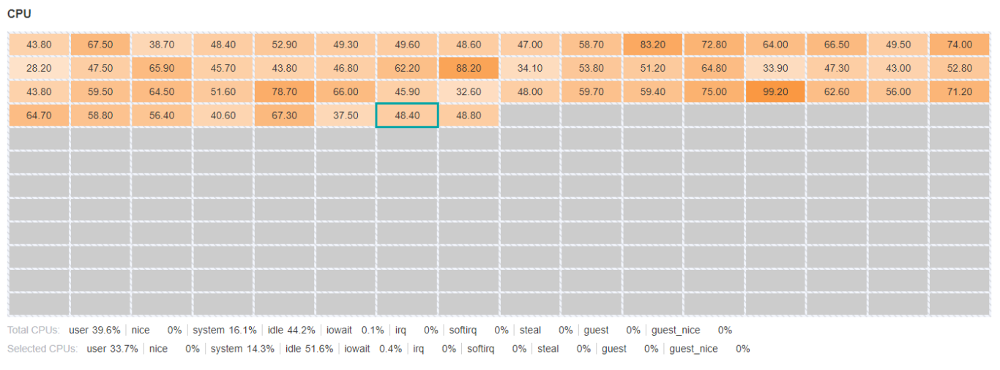
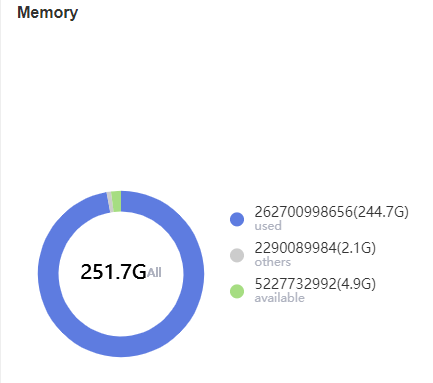

Hardware Resources
Ascend Model Optimization Intermediate Expert

Overview
Users can view hardware resources such as Ascend AI processor, CPU, memory, etc., so as to allocate appropriate resources for training. Just Start MindInsight, and click “Hardware Resources” in the navigation bar to view it.
Ascend AI Processor Board
The Ascend AI processor board is used to view the current information of each NPU chip.

Figure 1: Hardware resources Ascend AI processor board
Figure 1 is a table, each row shows the information of each NPU chip at a certain time. The metrics in each column are as follows:
Name: The name of the chip.
ID: The chip ID, from
0to7.Available: Whether the chip is available.
Health: The chip health status.
IP Address: The chip IP address.
HBM-Usage(MB): The chip used HBM memory.
Power(W): The chip power.
Temp(°C): The chip temperature.
The result of whether the chip is available is for reference only.
CPU Board
The CPU board is used to view the current system CPU total and the information of each core.

Figure 2: Hardware resources CPU board
The two-dimensional table in Figure 2 shows the percentage of CPU utilization for each core; the following two rows show the detailed metrics of CPU-total and CPU-selected.
user: Time spent by normal processes executing in user mode.
system: Time spent by processes executing in kernel mode
idle: Time spent doing nothing.
nice: Time spent by niced (prioritized) processes executing in user mode.
iowait: Time spent waiting for I/O to complete.
irq: Time spent for servicing hardware interrupts.
softirq: Time spent for servicing software interrupts.
steal: Time spent by other operating systems running in a virtualized environment.
guest: Time spent running a virtual CPU for guest operating systems under the control of the Linux kernel.
guest_nice: Time spent running a niced guest.
interrupt: Time spent for servicing hardware interrupts.
dpc: Time spent servicing deferred procedure calls (DPCs).
The CPU metrics displayed by different systems may be different.
Memory Board
The memory board is used to view the current system memory information.

Figure 3: Hardware resources memory board
Figure 3 shows a pie chart showing used memory and available memory. Other memory types are classified into others.